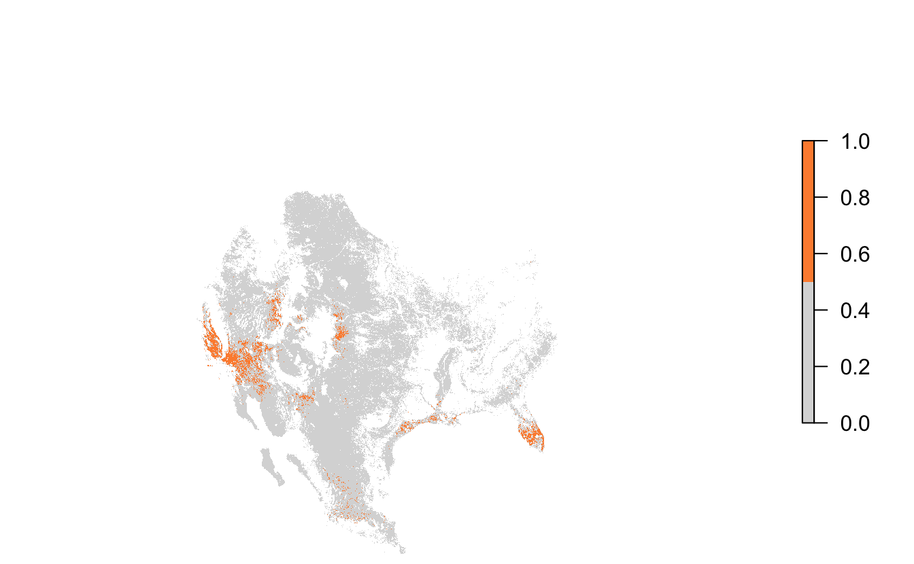
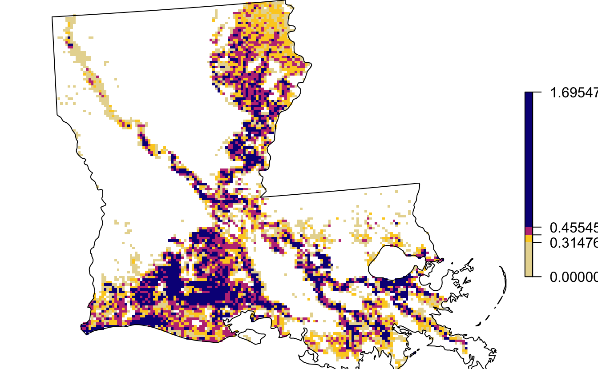
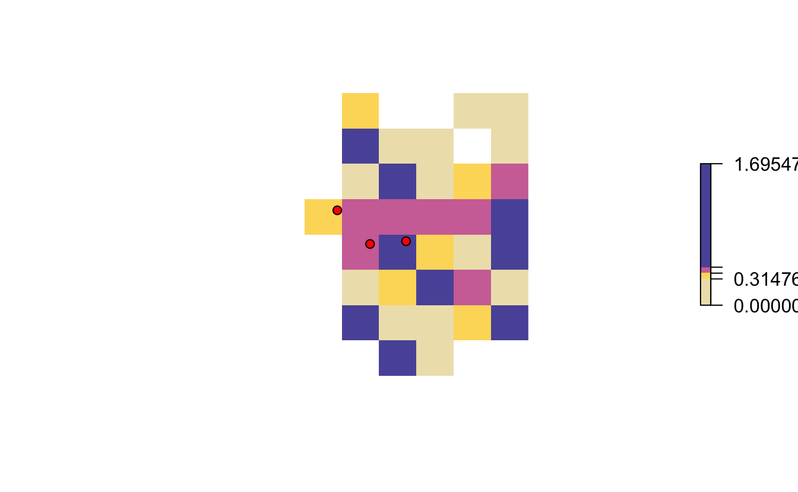
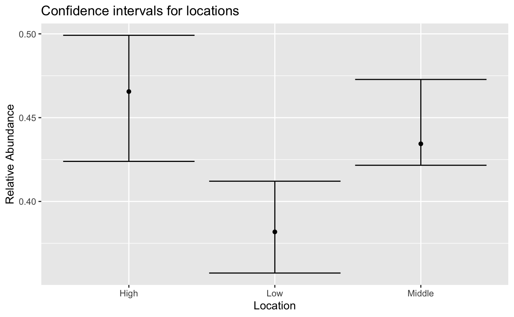
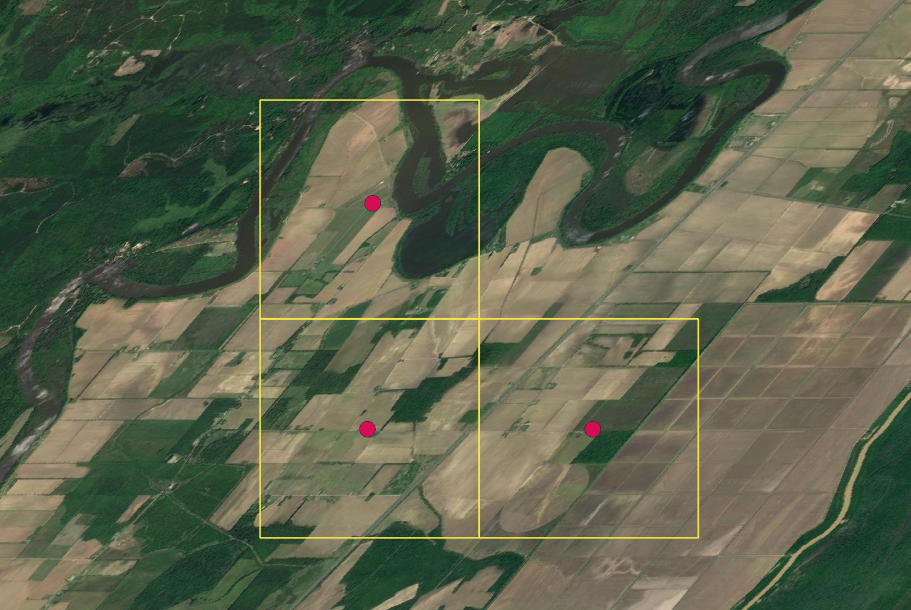

Lesson 2 Site Selection
2.1 Objective
To use eBird Status & Trends data to identify important sites for Loggerhead Shrike during the breeding season at different spatial scales. This is an example of an analysis you might do to prioritize sites for a species, perhaps for conservation or management.
2.2 Introduction
In the previous lesson, we saw how to download eBird Status and Trends data and load weekly estimates of relative abundance into R for further analysis. In this lesson, we’ll demonstrate one possible use case for these data: identifying sites of high importance for a species of conservation concern. Let’s start by loading the libraries we’ll need for this analysis.
2.3 Seasonal abundance data
For this site selection analysis we’ll be interested in identifying important sites for Loggerhead Shrike during the breeding season. Recall from the previous lesson, that Status and Trends data are provided as weekly estimates and we can access predefined seasonal boundary dates from the ebirdst_runs data frame.
logshr_run <- filter(ebirdst_runs, common_name == "Loggerhead Shrike")
start_dt <- logshr_run$breeding_start_dt
end_dt <- logshr_run$breeding_end_dt
c(start_dt, end_dt)
#> [1] "2018-05-17" "2018-06-21"We could subset the weekly relative abundance RasterStack to just the breeding season weeks, then average across the weeks. However, as a shortcut, the ebirdst package provides pre-calculated seasonal raster layers, which we can access with load_raster().
# find the location of the data we downloaded in the previous lesson
sp_path <- get_species_path("Loggerhead Shrike")
# load the seasonal rasters
abd <- load_raster("abundance_seasonal", sp_path)
abd
#> class : RasterStack
#> dimensions : 5630, 7074, 39826620, 4 (nrow, ncol, ncell, nlayers)
#> resolution : 2963, 2963 (x, y)
#> extent : -2e+07, 943785, -6673060, 1e+07 (xmin, xmax, ymin, ymax)
#> crs : +proj=sinu +lon_0=0 +x_0=0 +y_0=0 +a=6371007.181 +b=6371007.181 +units=m +no_defs
#> names : breeding, nonbreeding, postbreeding_migration, prebreeding_migration
#> min values : 0, 0, 0, 0
#> max values : 1.90, 3.06, 2.03, 2.14
# subset to just the breeding season
abd_breeding <- abd[["breeding"]]
abd_breeding
#> class : RasterLayer
#> dimensions : 5630, 7074, 39826620 (nrow, ncol, ncell)
#> resolution : 2963, 2963 (x, y)
#> extent : -2e+07, 943785, -6673060, 1e+07 (xmin, xmax, ymin, ymax)
#> crs : +proj=sinu +lon_0=0 +x_0=0 +y_0=0 +a=6371007.181 +b=6371007.181 +units=m +no_defs
#> source : /Users/mes335/Library/Application Support/ebirdst/logshr-ERD2018-EBIRD_SCIENCE-20191029-48417b13/results/tifs/logshr-ERD2018-EBIRD_SCIENCE-20191029-48417b13_hr_2018_abundance_seasonal_breeding.tif
#> names : breeding
#> values : 0, 1.9 (min, max)This layer represents the expected relative abundance of Loggerhead Shrike during the breeding season on an eBird Traveling Count by a skilled eBirder starting at the optimal time of day with the optimal search duration and distance that maximizes detection of this species in a region.
Let’s crop and re-project based on the species specific map parameters.
2.4 Range-wide site selection
To perform a range-wide site selection, we’ll identify the locations with the top 5% of non-zero abundance values across the entire range and visualize those locations.
# remove zeroes prior to calculating quantiles
abd_breeding_proj[abd_breeding_proj == 0] <- NA
# calculate the 95th quantile
q95 <- quantile(abd_breeding_proj, na.rm = TRUE, probs = 0.95)
# identify top 5% of cells
abd_top5 <- abd_breeding_proj >= q95Finally let’s map these selected sites.
par(mar = c(0, 0, 0, 0))
plot(abd_top5, col = c('#d9d9d9', '#fd8d3c'),
axes = FALSE, box = FALSE,
maxpixels = ncell(abd_top5))
2.5 Local Selection
Let’s transition from broad-scale, region-wide site selection to a local site selection exercise. For example, let’s consider a land trust working in Louisiana trying to identify important sites for Loggerhead Shrike. To start, we’ll get a boundary polygon for Louisiana.
# get spatial boundary for louisiana
la <- ne_states(iso_a2 = "US", returnclass = "sf") %>%
filter(name == "Louisiana") %>%
# project
st_transform(crs = map_pars$custom_projection)We can identify the quartiles of the abundance data within Louisiana, essentially dividing the cells within the state into four equally sized groups.
# mask to louisiana
abd_breeding_la <- mask(abd_breeding_proj, la) %>%
raster::trim()
# calculate abundance quartiles
quarters <- quantile(abd_breeding_la, probs = c(0.25, 0.5, 0.75, 1))
# map
par(mar = c(0, 0, 0, 0))
plot(abd_breeding_la,
breaks = c(0, quarters), col = abundance_palette(4, season = "weekly"),
maxpixels = ncell(abd_breeding_la),
box = FALSE, axes = FALSE)
plot(st_geometry(la), add = TRUE)
2.5.1 Uncertainty analysis
When using these abundance rasters at a local scale, it’s important to be cautious because of the broad spatial scale at which the modeling was conducted. As with any modeled estimates, these abundance estimates have uncertainty associated with them. One approach to dealing with this is to use the spatial estimates of uncertainty (the 10th and 90th quantiles of relative abundance) to assess if locations that we’re considering for selection have overlapping confidence intervals.
Let’s start by loading these upper and lower confidence interval raster layers, subsetting to the breeding season within Louisiana, and calculating a breeding season average.
# load the upper and lower confidence intervals
abd_upper <- load_raster("abundance_upper", path = sp_path)
abd_lower <- load_raster("abundance_lower", path = sp_path)
# subset to breeding season in louisiana
la_breeding_season <- ebirdst_extent(la, c(start_dt, end_dt))
abd_upper_br <- ebirdst_subset(abd_upper, la_breeding_season)
abd_lower_br <- ebirdst_subset(abd_lower, la_breeding_season)
# average for the breeding season and project
abd_upper_br_avg <- calc(abd_upper_br, fun = mean, na.rm = TRUE) %>%
projectRaster(crs = map_pars$custom_projection,
method = "ngb")
abd_lower_br_avg <- calc(abd_lower_br, fun = mean, na.rm = TRUE) %>%
projectRaster(crs = map_pars$custom_projection,
method = "ngb")Next, let’s imagine we’re considering three potential sites in northern Louisiana, one in each of the top three quartiles of abundance.
# generate points and convert to spatial
pts <- data.frame(name = c("High", "Middle", "Low"),
lng = c(-92.0777, -92.1081, -92.1336),
lat = c(32.2624, 32.2624, 32.2882)) %>%
st_as_sf(coords = c("lng", "lat"), crs = 4326) %>%
st_transform(crs = st_crs(map_pars$custom_projection))We can overlay these points on a zoomed-in version of the above quartile map. Note that they each falls within a different colored cell, i.e. they all belong to different quartiles.
plot(abd_breeding_la,
breaks = c(0, quarters),
col = abundance_palette(4, season = "weekly"), alpha = 0.75,
ext = st_buffer(pts, 10000),
maxpixels = ncell(abd_breeding_la),
box = FALSE, axes = FALSE)
plot(pts, pch = 21, bg = "red", col = "black", cex = 1, add = TRUE)
Let’s look at the abundance and confidence intervals for each of these points.
# extract raster values
pts$abd <- extract(abd_breeding_la, pts)
pts$lower <- extract(abd_lower_br_avg, pts)
pts$upper <- extract(abd_upper_br_avg, pts)
# plot the confidence intervals for the three points
ggplot(pts, aes(y = abd, x = name)) +
geom_point() +
geom_errorbar(aes(ymin = lower, ymax = upper)) +
labs(x = "Location", y = "Relative Abundance",
title = "Confidence intervals for locations")
2.5.2 Ground truth
One additional way to check the results of a site selection exercise is to ground truth the results using satellite imagery for the region in question.
